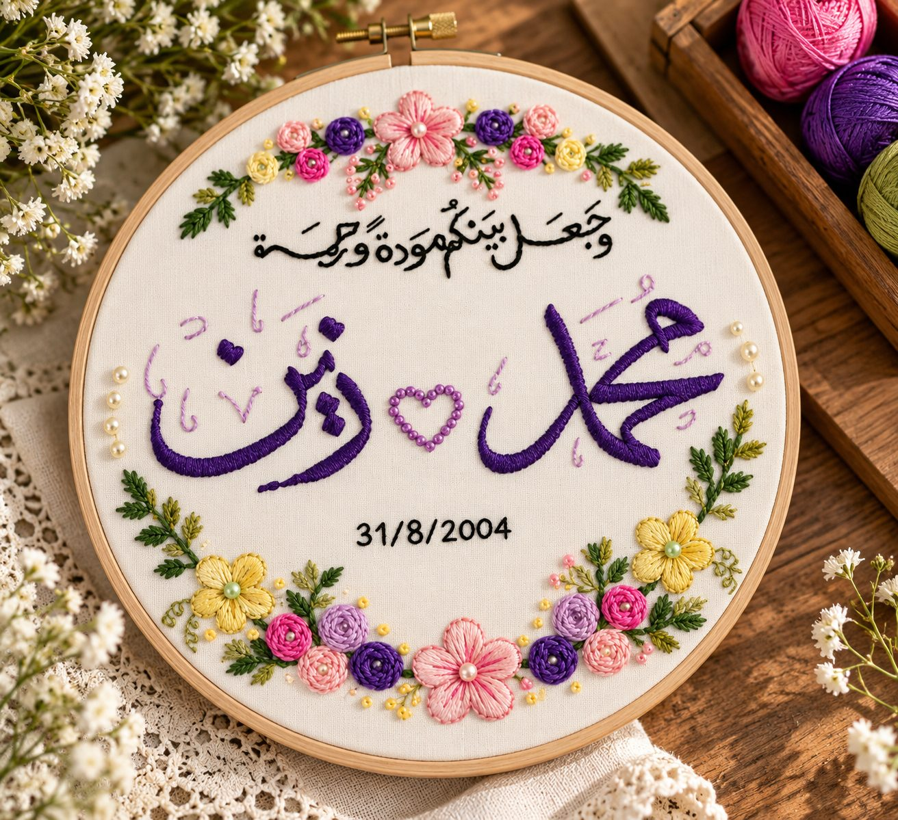

Areej Handmade
← Back to shopChapter 01 · The beginningEvery story
Every story
starts somewhere.
A blank embroidery hoop. A thought worth keeping. Scroll slowly and watch a personal keepsake take shape.


Areej
THE FINAL STITCHMade to mean
Make your own hoop →
Made to mean
more.
Make your own hoop →Made by Areej.
Made for your story.
These are real Areej Handmade pieces: names, faith, heritage, celebrations and the people behind every order.





Scroll to create